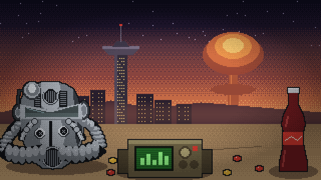

War never changes. Neither do your biases.
Wasteland Odds
Paradoxes of Choices under Uncertainty
Four deals. Trust your gut, then see what it broke.

War never changes. Neither do your biases.
Paradoxes of Choices under Uncertainty
Four deals. Trust your gut, then see what it broke.
